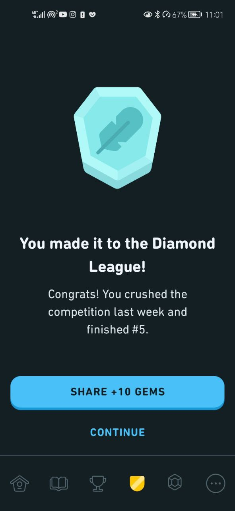
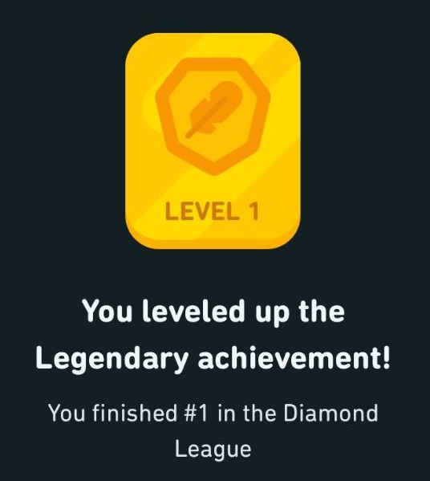
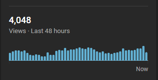

#
It's been something like two months now. I have no real excuses for not writing. I was quite busy but that is not the reason. I feel like shit, feel like I am working for no other reason than just working. I don't feel I enjoy it but I don't really enjoy anything. In the past I liked writing to my friends and especially the girl I liked but none of them are present in my life anymore. I feel immense guilt, because of the things that I am responsible for and things that let me down this path, all the time and it doesn't really feel like I have any sort of an out anymore.
I cannot fix my mistakes I did to a girl. I don't want to see my past friends anymore and neither do they because I am just too much of a downer. I don't care about the war going on but if Putin wants to drop a bomb on me I don't mind. I am not thinking of killing myself because what is the point of thinking of it if you don't do it. It just makes you feel worse. But if I do die somehow and this will be seen by my parents I just want to say that it is not your fault. You weren't good parents and you would still be bad parents today but there are a lot more worse parents out there and the position I am in right now is a fault of my own. To my sister, stop thinking that you are stupid. You can achieve most of the things you want but you won't if you keep thinking that you are somehow worse than others.
I've advanced to the diamond league in Duolingo and received the hardest achievement, the legendary one. It was hard, especially going through the leagues because it takes time and people there are very competetive. I don't know if it was worth it because I didn't learn much of the language because of it but I know better now how to learn the language using Duolingo.  
I made some progress with my Youtube channel and since July I went from 64 views in 24 hours to what's in the picture. I learned some things, learned what I was doing wrong and... right.
So I am back to studying law for the second year. I also got a certificate in IT. That is why I was busy. All of these things so shallow to me and I don't know why am I doing them but maybe it's better to do stuff than not to. It also helps sometimes to ward off those feelings of guilt. It seems irrational for me if I will keep this guilt until the day I die but while thinking logically I realize that I need to somehow forgive myself to continue living, I still can't. It still hurts.